Née en Belgique au début des années 2000, Alys Noir est une artiste à la croisée du pop rock, de l’émotion brute et de la poésie sombre.
Son univers, à la fois délicat et intense, puise sa force dans la sincérité et la pudeur.
Issue d’une famille d’artistes, Alys grandit entourée de créativité : une mère styliste, un père passionné d’arts plastiques, de dessin et de musique assistée par ordinateur. Cet environnement artistique façonne très tôt sa sensibilité et son goût pour la beauté imparfaite des émotions humaines.
Inspirée par Mylène Farmer et Evanescence, Alys développe un style singulier où se mêlent fragilité, force et mystère. Réservée et discrète, elle trouve refuge dans l’écriture, transformant les mots en exutoire, en miroir, en refuge.
Ses chansons explorent les zones d’ombre et de lumière : la quête de soi, les blessures intérieures, le rêve, l’absence et la résilience.
Le 18 octobre 2024, elle dévoile son premier album, Les Ailes Brisées, qui pose les fondations d’un univers authentique et introspectif.
Suivent le single Vierge ou Vipère (21 juin 2026) et l’album La Main de l’Espèce (26 septembre 2025), confirmant la profondeur et la cohérence de sa démarche artistique.
Chez Alys Noir, l’argent n’a jamais été un moteur : sa musique est avant tout un acte de partage.
À ce jour, aucun gain n’a encore été généré, et chaque projet est financé personnellement pour améliorer la production, offrir du contenu aux fans et faire vivre la musique.
Si des bénéfices venaient un jour à être réalisés, ils seraient en grande partie redistribués, CD physiques offerts, concerts gratuits, ou aide apportée à des personnes dans le besoin.
Son art a pour but de donner, jamais de prendre : une musique qui tend la main, loin des artifices, fidèle à son âme.
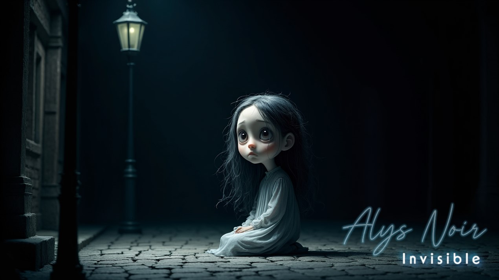
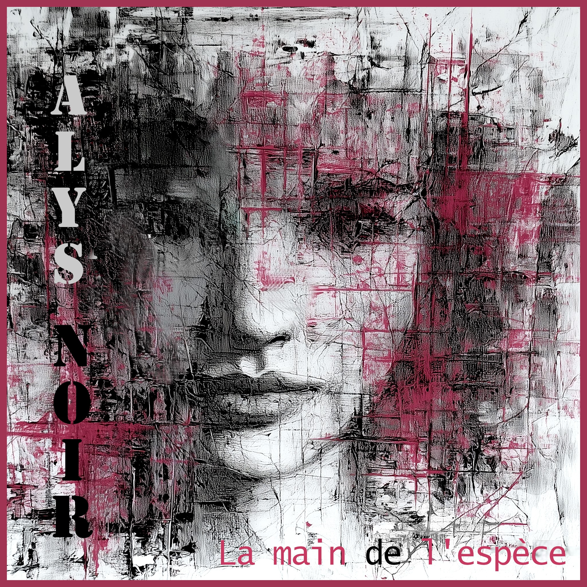
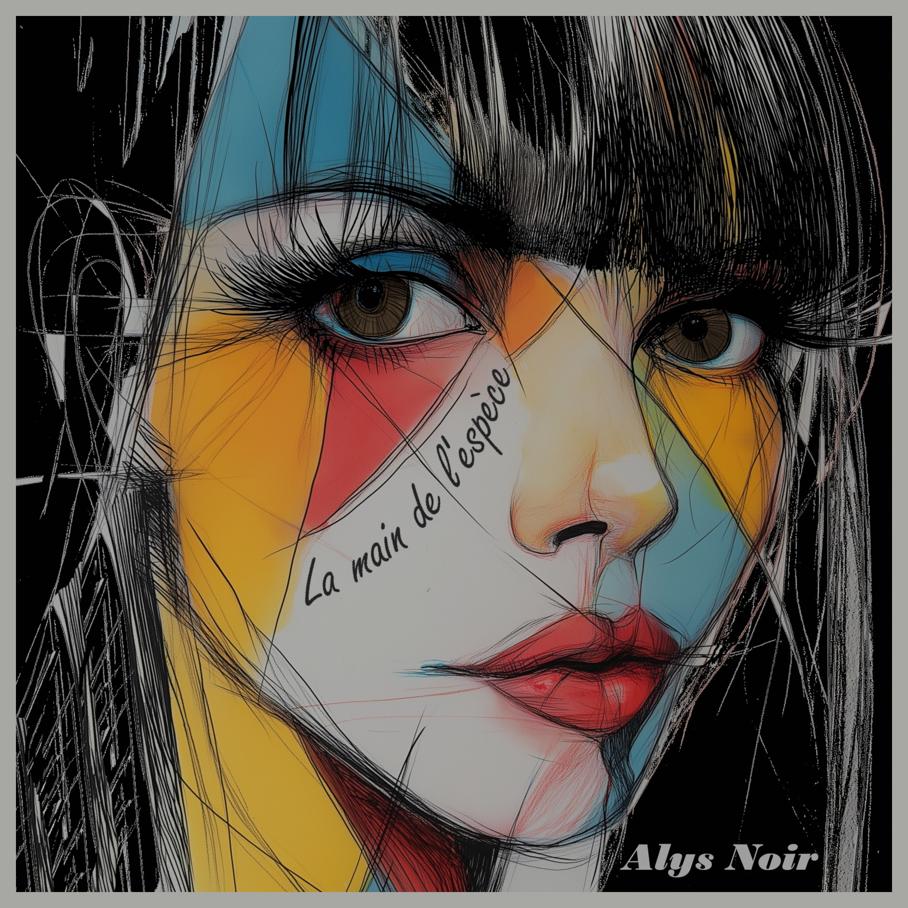
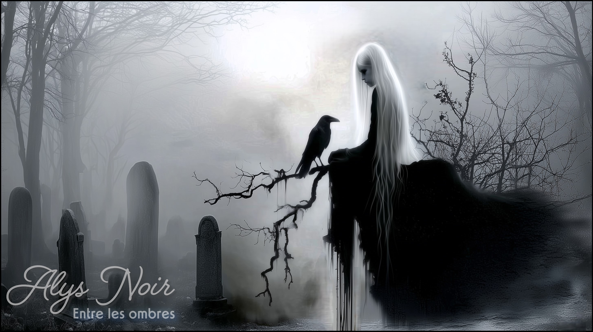
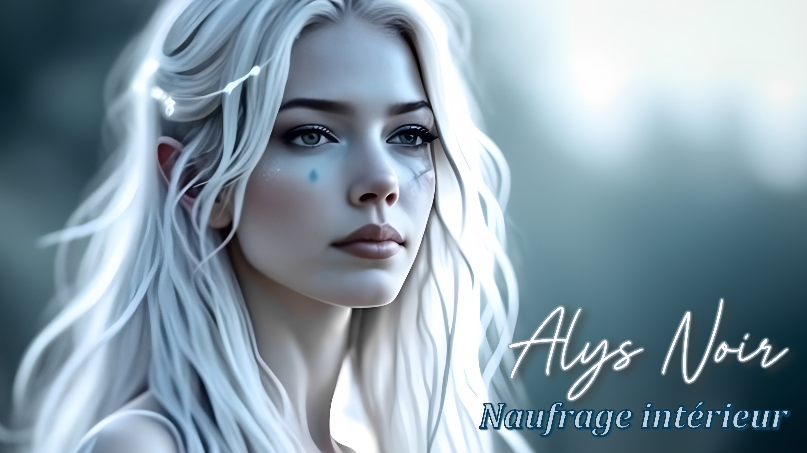
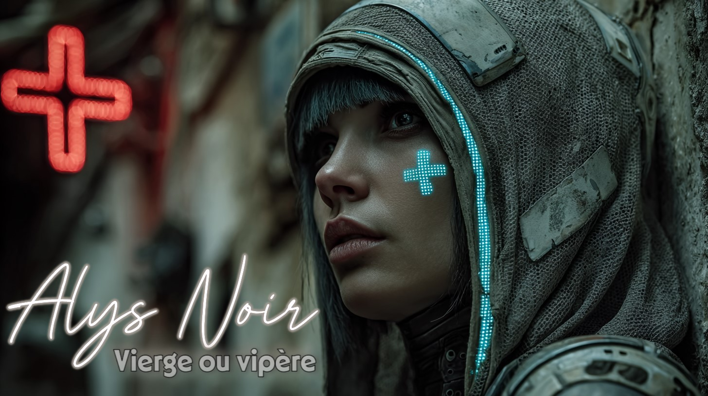
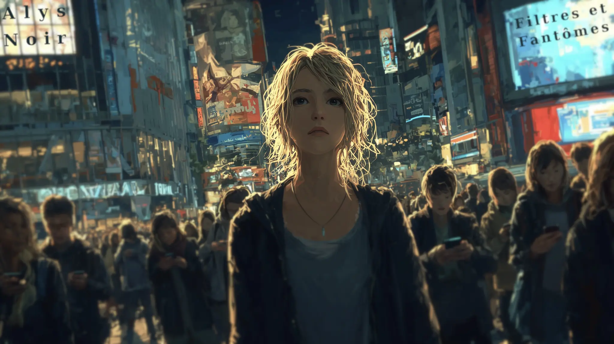
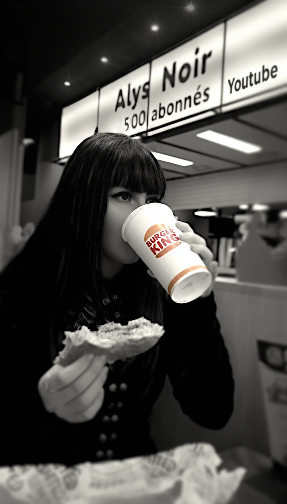
Albums
Premier Album : Les Ailes Brisées
Sorti le 18 octobre 2024, "Les Ailes Brisées" est un voyage émotionnel à travers 10 titres qui explorent les thèmes de la renaissance, de la transformation et de la résilience.
Liste des titres
1. Entre les Ombres (3:38)
Dans le silence, je te cherche encore,
Ton ombre danse là où bat mon corps.
Les mots s'effacent, seuls tes yeux me hantent,
Sous les étoiles, ton écho me guide.
Je respire à peine, ton souffle me manque,
Dans cette nuit où tout semble si vide.
Parle-moi, ne me laisse pas dans l'obscurité,
Tes mots sont la lumière, ma vérité,
Je m'accroche à l'espoir que tu reviendras,
Dans ce monde où tout s'effondre sans toi.
Les heures passent, je compte chaque seconde,
Sans toi, je perds ma place dans ce monde,
Ton absence pèse comme un lourd silence,
Dans cette douleur, je trouve ma résilience.
Parle-moi, ne me laisse pas dans l'obscurité,
Tes mots sont la lumière, ma vérité,
Je m'accroche à l'espoir que tu reviendras,
Dans ce monde où tout s'effondre sans toi.
Je t'attends ici, là où nos rêves s'écrivent,
Même dans le noir, ton amour me délivre.
Dans le silence, je te cherche encore,
Ton ombre danse là où bat mon corps.
2. La dernière danse (2:59)
Nous étions deux, liés par un fil,
Un souffle, un battement fragile,
Le temps nous a pris dans ses bras,
Et nous a laissés sans voix.
Sous la pluie, nos pas se mélangent,
Une valse, une étrange revanche,
Je serre ton corps une dernière fois,
Avant que tout ne s'efface sous mes doigts.
La dernière danse, c'est maintenant,
Nos cœurs se taisent doucement,
La dernière danse, dans le silence,
Nous sommes l'écho d'une absence.
Les souvenirs, comme des fantômes,
Dansent autour de nous, en somme,
Un ballet de larmes oubliées,
Dans cette nuit qui nous a figés.
Je veux te dire tout ce que j'ai,
Mais les mots sont partis, envolés,
Nos corps s'effleurent sans chaleur,
Un adieu dans la douleur.
La dernière danse, c'est maintenant,
Nos cœurs se taisent doucement,
La dernière danse, dans le silence,
Nous sommes l'écho d'une absence.
Et sous les étoiles qui s'éteignent,
Nos ombres se rejoignent,
Un dernier tour, un dernier souffle,
Avant que l'amour ne s'étouffe.
3. L'enfant du vide (3:03)
Je suis l'enfant des songes,
Qui se perd dans les mensonges,
Dans un monde où tout se tait,
Je cherche un lieu où exister.
Les étoiles me parlent en secret,
Mais leur lumière s'éteint à jamais,
Je cours après des ombres en fuite,
Mais tout autour, je dérive, je m'éclipse.
L'enfant du vide, où vas-tu ?
Dans tes rêves, qui es-tu ?
L'enfant du vide, où t'envoles-tu ?
Dans l'oubli, disparais-tu ?
Le silence me berce chaque nuit,
Je danse seule, je m'enfuis,
Des fantômes me montrent la voie,
Mais la fin est là, je n'ai plus de choix.
Je tends la main vers l'infini,
Mais personne ne répond ici,
Je suis l'enfant perdu dans l'ombre,
Dans ce monde où tout sombre.
L'enfant du vide, où vas-tu ?
Dans tes rêves, qui es-tu ?
L'enfant du vide, où t'envoles-tu ?
Dans l'oubli, disparais-tu ?
Loin du bruit, loin des cris,
Je cherche une lumière,
Mais tout s'efface dans l'air,
Je reste seule, une prière.
L'enfant du vide, où vas-tu ?
Dans tes rêves, qui es-tu ?
L'enfant du vide, où t'envoles-tu ?
Dans l'oubli, disparais-tu ?
4. Invisible (4:00)
Je marche dans les rues désertes,
Personne ne sait que je me perds,
Mes pas sont des silences longs,
Je suis un secret sans nom.
Le monde tourne sans me voir,
Dans l'ombre, je fuis sans espoir,
Les regards glissent sur ma peau,
Comme un reflet, je suis de trop.
Invisible, je ne suis rien,
Invisible, juste un lien,
Entre la lumière et la nuit,
Invisible, qui je suis ?
Je crie sans que tu m'entendes,
Les murs m'enferment, je me rends,
Je cherche un signe, une lueur,
Dans ce vide qui fait peur.
Les miroirs ne me renvoient rien,
Juste un vide sans lendemain,
Je suis là, mais qui le sait ?
Dans ce monde, qui m'a oublié ?
Invisible, je ne suis rien,
Invisible, juste un lien,
Entre la lumière et la nuit,
Invisible, qui je suis ?
Une ombre parmi tant d'others,
Dans la foule, je me vautre,
Je suis là, mais qui me voit ?
Invisible, je m'efface, déjà.
5. Écorchée vive (3:06)
Sous ma peau, tout se brise,
Un souffle, une vie en crise,
Je m'effondre dans le noir,
Mon cœur s'éteint dans le désespoir.
Chaque pas me déchire un peu plus,
Mon âme, écorchée, s'est perdue,
Dans un monde qui ne veut plus rien,
Je suis là, mais tout me retient.
Écorchée vive,
Je saigne, je dérive,
Écorchée vive,
Dans un monde qui me fait mal.
Les mots sont des armes tranchantes,
Des promesses qui me hantent,
Je cherche une issue, un chemin,
Mais tout s'arrête ici, sans fin.
Écorchée vive,
Je saigne, je dérive,
Écorchée vive,
Dans un monde qui me fait mal.
6. De l'autre côté (3:14)
Je regarde le ciel s'assombrir,
Et je sens mon cœur s'alanguir,
Les souvenirs m'appellent tout bas,
Mais je ne peux plus faire un pas.
De l'autre côté, où tout est calme,
Je cherche la paix pour mon âme,
De l'autre côté, loin de la douleur,
Je veux retrouver ma couleur.
Les ombres s'étirent sur le sol,
Et je perds enfin mon envol,
Le silence m'enveloppe doucement,
Dans ce dernier et long moment.
De l'autre côté, où tout est calme,
Je cherche la paix pour mon âme,
De l'autre côté, loin de la douleur,
Je veux retrouver ma couleur.
7. L'âme en exil (3:07)
Je suis une étrangère ici,
Dans ce monde qui m'a trahie,
Mon cœur bat un rythme étrange,
Comme un ange qui se venge.
L'âme en exil, je cherche ma voie,
Loin de tout ce qui me foudroie,
L'âme en exil, dans le froid,
Je ne trouve plus ma foi.
Les étoiles sont mes seules amies,
Dans cette nuit qui n'en finit,
Je marche seule sur ce chemin,
Sans savoir ce que sera demain.
L'âme en exil, je cherche ma voie,
Loin de tout ce qui me foudroie,
L'âme en exil, dans le froid,
Je ne trouve plus ma foi.
8. Naufrage intérieur (3:11)
Les vagues s'écrasent contre mon cœur,
Je sombre dans cette lueur,
Le silence est mon seul cri,
Dans ce monde qui m'a oubliée ici.
Naufrage intérieur, je coule doucement,
Dans cet océan de tourments,
Naufrage intérieur, sans un bruit,
Je disparais dans la nuit.
Les souvenirs sont des ancres lourdes,
Dans cette mer où tout est sourde,
Je cherche une main à saisir,
Mais je ne fais que m'évanouir.
Naufrage intérieur, je coule doucement,
Dans cet océan de tourments,
Naufrage intérieur, sans un bruit,
Je disparais dans la nuit.
9. Les ailes brisées (2:54)
Je voulais voler vers le soleil,
Mais je me suis brûlée au réveil,
Mes ailes sont tombées en poussière,
Sur cette terre de misère.
Les ailes brisées, je ne peux plus voler,
Dans ce ciel qui m'a oubliée,
Les ailes brisées, je reste là,
À attendre que tout s'en aille déjà.
Le vent se moque de ma chute,
Et je perds enfin cette lutte,
Le sol est dur, le froid est là,
Et je ne sais plus où je vais, moi.
Les ailes brisées, je ne peux plus voler,
Dans ce ciel qui m'a oubliée,
Les ailes brisées, je reste là,
À attendre que tout s'en aille déjà.
10. La danse des ombres (4:00)
Dans le noir, tout s'anime,
Un ballet, une ultime rime,
Les ombres dansent autour de moi,
Et je perds enfin ma voix.
La danse des ombres, c'est ma vie,
Dans cette nuit qui m'a choisie,
La danse des ombres, sans un bruit,
Je m'efface, je m'enfuis.
Les fantômes me tendent la main,
Pour m'emmener vers demain,
Un monde où tout est silence,
Loin de cette étrange souffrance.
La danse des ombres, c'est ma vie,
Dans cette nuit qui m'a choisie,
La danse des ombres, sans un bruit,
Je m'efface, je m'enfuis.
Second Album : La main de l'espèce
Sorti le 26 septembre 2025, "La main de l'espèce" explore des thématiques contemporaines et existentielles avec 12 titres percutants qui questionnent notre rapport au monde moderne, à la nature et à l'amour.
Liste des titres
1. Filtres et fantômes
Un clic, un flash, un monde parfait
On lisse les traits, on cache les regrets
Derrière l'écran, tout semble si beau
Mais sous le vernis, on porte nos fardeaux
On cherche l'éclat dans des yeux de verre
On vend nos vies pour plaire à la terre
Mais qui nous voit quand le jour s'éteint ?
Quand les pixels meurent au petit matin ?
Filtres et fantômes, on danse dans le vide
Des cœurs en plastique, des âmes livides
On s'aime en ligne, on se perd en vrai
Prisonniers d'un rêve qu'on ne peut toucher
On compte les likes comme on compte les jours
En oubliant le poids de l'amour
Une image, un masque, un reflet glacé
Dans ce miroir, on s'est tous effacés
Filtres et fantômes, on danse dans le vide
Des cœurs en plastique, des âmes livides
On s'aime en ligne, on se perd en vrai
Prisonniers d'un rêve qu'on ne peut toucher
Regarde-moi, sans ce voile, sans ce fard
Avant qu'il ne soit vraiment trop tard...
On est des ombres dans un monde de lumière
Cherchant un sens dans cette atmosphère.
Filtres et fantômes, on danse dans le vide
Des cœurs en plastique, des âmes livides
On s'aime en ligne, on se perd en vrai
Prisonniers d'un rêve qu'on ne peut toucher
2. Terre en cendres
Les ombres rampent sous la peau
Un cri sourd que rien n'absout
Le ciel se ferme, rideau de plomb
Ma voix s'éteint dans l'horizon
Les arbres tombent sans mémoire
Le vent emporte nos espoirs
Sous les cendres, plus de saisons
On danse au bord de l'abandon
La mer remonte dans les veines
Un feu noir dans chaque chaîne
Je cours, je frappe, mais rien ne cède
La terre gémit et me précède
Un battement, une dernière chance
Avant le choc, la dissonance
Terre en cendres, plus de lumière
Nos prières brûlent dans la poussière
Le silence hurle, immense et froid
Dis-moi, qu'avons-nous fait de toi ?
Les villes crient en noir et blanc
Les enfants fuient en tremblant
Plus de repères, que des mirages
Des promesses mortes sur nos visages
Tu pleures rouge, tu saignes des pierres
Chaque pas résonne comme un enfer
Terre en cendres, plus de lumière
Nos prières brûlent dans la poussière
Le silence hurle, immense et froid
Dis-moi, qu'avons-nous fait de toi ?
Terre en cendres, plus de pardon...
Les astres tombent sur notre chemin
On ne saura plus jamais pourquoi
La vie s'est éteinte entre tes doigts
Et moi je reste… dans le néant
Une larme sèche, un dernier chant…
3. Sélène pleure
Sous les voiles de brume,
Elle cherche un matin,
Ses mains noient la lune,
Dans un soupir lointain.
Sélène pleure,
Sur nos blessures,
Elle efface les heures,
Dans la nuit obscure.
Sélène pleure,
Sous la froidure,
Son cœur se meurt,
Dans la nuit si pure.
Les étoiles reculent,
Sous son dernier aveu,
Son âme se disloque,
Aux frontières du feu.
Sélène pleure,
Sur nos blessures,
Elle efface les heures,
Dans la nuit obscure.
Sélène pleure,
Sous la froidure,
Son cœur se meurt,
Dans la nuit si pure.
Un frisson sans lumière,
Traverse l'univers,
Ses larmes amères,
Oublient nos prières.
Sélène pleure,
Sur nos blessures,
Elle efface les heures,
Dans la nuit obscure.
Sélène pleure,
Sous la froidure,
Son cœur se meurt,
Dans la nuit si pure.
4. Vierge ou vipère
Elle marche sans bruit, une croix sur la peau,
Des promesses d'ange, mais le souffle est chaud.
Ses mots sont des pièges, ses silences des guerres,
On l'appelle douceur, elle répond colère.
Vierge ou vipère, qui peut la juger ?
Un baiser de feu, un regard glacé.
Vierge ou vipère, elle est les deux à la fois,
Et tu tomberas, qu'importe le choix.
Elle n'est ni coupable, ni sainte, ni reine,
Juste un éclat d'ombre, une lumière pleine.
Un poison si pur qu'il devient remède,
Une vérité qu'on efface quand elle cède.
Vierge ou vipère, qui peut la juger ?
Un baiser de feu, un regard glacé.
Vierge ou vipère, elle est les deux à la fois,
Et tu tomberas… c'est son seul choix.
5. La main de l'espèce
Tu crois que je suis ton feu, ta lumière,
Mais c'est ton sang qui m'a choisi hier.
Ton cœur s'incline, mais sans savoir,
Que je ne suis qu'un miroir illusoire...
Ce n'est pas moi que tu poursuis,
C'est l'écho sourd de ton envie.
Je suis la main de l'espèce,
Le piège dans la tendresse.
L'amour ? Une arme, un leurre,
Qui bat au rythme de ton erreur...
Tu m'admires comme un dieu tombé,
Mais c'est la nature qui t'a dicté
Chaque frisson, chaque regard,
Pour mieux t'éloigner du hasard...
Ce n'est pas moi que tu poursuis,
C'est l'écho sourd de ton envie.
Je suis la main de l'espèce,
Le piège dans la tendresse.
L'amour ? Une arme, un leurre,
Qui bat au rythme de ton erreur...
Tu veux m'aimer pour l'éternité ?
Mais même ça, elle l'a programmé.
Elle t'utilise, et moi aussi...
Rien ne nous rendra libres ici.
Ce n'est pas moi que tu poursuis,
C'est l'écho sourd de ton envie.
Je suis la main de l'espèce,
Le piège dans la tendresse.
L'amour ? Une arme, un leurre,
Qui bat au rythme de ton erreur...
6. L'écho des pierres
Sur la lande oubliée,
Les pierres murmurent,
Des secrets égarés,
Dans l'ombre qui dure
L'écho des pierres,
Chante nos guerres,
Sous la poussière,
D'un dernier hiver.
Les vents déchirent,
Les serments glacés,
Sous les racines,
Nos âmes sont liées.
L'écho des pierres,
Chante nos guerres,
Sous la poussière,
D'un dernier hiver.
Un dernier cri,
Au fond de la nuit,
Réveille les pierres,
Et endort la vie.
L'écho des pierres,
Chante nos guerres,
Sous la poussière,
D'un dernier hiver.
7. Nuit d'opale
Un souffle glacé frôle mes doigts,
Les ombres dansent autour de moi.
Chaque pas m'efface un peu plus,
Dans ce désert où tout s'inclut.
Nuit d'opale, ouvre-moi tes voiles,
Je veux sombrer sous ton signal.
Nuit d'opale, guide mes silences,
Avant que le jour me relance.
Je frôle des murs sans les toucher,
Des souvenirs prêts à chavirer.
Ton reflet dans mes cicatrices,
M'entraîne loin de mes prémices.
Nuit d'opale, ouvre-moi tes voiles,
Je veux sombrer sous ton signal.
Nuit d'opale, guide mes silences,
Avant que le jour me relance.
Si je ferme les yeux, j'aperçois
Un monde où rien ne me noiera.
Nuit d'opale, ouvre-moi tes voiles,
Je veux sombrer sous ton signal.
Nuit d'opale, guide mes silences,
Avant que le jour me relance.
Je frôle des murs sans les toucher,
Des souvenirs prêts à chavirer.
Ton reflet dans mes cicatrices,
M'entraîne loin de mes prémices.
8. Les chaînes sucrées
J'ai avalé ton poison doux,
Comme on boit pour oublier,
Mais plus je goûte à tes genoux,
Plus je me sens désarmée.
Les chaînes sucrées,
Enroulées autour de moi,
Je t'aimais pour exister,
Maintenant je ne vis qu'en toi.
Tu m'as fait reine de mes failles,
D'un empire sans lumière,
Chaque mot, une bataille,
Contre mes propres prières.
J'essaie de briser l'habitude,
Mais tu reviens comme un besoin…
Les chaînes sucrées,
Enroulées autour de moi,
Je t'aimais pour exister,
Maintenant je ne vis qu'en toi.
Les chaînes sucrées,
Enroulées autour de moi,
Je t'aimais pour exister,
Maintenant je ne vis qu'en toi.
9. Les poupées saignent
Un œil fermé, l'autre grand ouvert,
Une poupée gisait sur le parterre.
Ses cils mouillés, son cœur cousu,
Quelqu'un l'a prise, quelqu'un l'a t…
Les poupées saignent en silence,
Sous les robes blanches, l'innocence.
On recoud leur bouche d'un fil noir,
On leur dit d'oublier, de ne plus croire.
Elles dansent encore dans nos souvenirs,
Avec des gestes trop beaux pour mourir.
Mais dans leurs bras cassés, je sens la honte,
Un cri coincé qui jamais ne monte.
Les poupées saignent en silence,
Sous les robes blanches, l'innocence.
On recoud leur bouche d'un fil noir,
On leur dit d'oublier, de ne plus croire.
Et si demain, l'une d'elles parlait ?
Si dans la nuit, elle se redressait ?
Son chant serait lame, son chant serait flamme,
Elle brûlerait le monde, les draps et les âmes.
Les poupées saignent en silence,
Mais un jour viendra la vengeance.
Leurs yeux de verre fixent le noir,
Et dans l'ombre, elles reprennent le pouvoir.
10. Vertige d'absence
J'ai tendu les bras dans le vide,
Des promesses sans lendemain,
Tu m'as laissée en orbite,
À tourner seule dans mes chagrins.
Vertige d'absence, je tombe sans fin,
Plus d'ancrage, plus de demain,
Un murmure dans le silence,
C'est tout ce qu'il me reste enfin.
Ton ombre vit dans mes murs,
Chaque pièce retient ta voix,
Mais l'absence est une brûlure,
Qui ne guérit jamais, je crois.
J'ai gardé la porte entrouverte,
Mais même le vent ne revient pas...
Vertige d'absence, je tombe sans fin,
Plus d'ancrage, plus de demain,
Un murmure dans le silence,
Et mon cœur qui bat pour rien.
11. Souffle d'ombre
Il y a un souffle dans la nuit,
Un murmure d'ombre qui fuit,
Invisible mais toujours présent,
Comme un secret lourd et latent
Souffle d'ombre, voix sans écho,
Tu danses autour de moi, héros,
Invisible dans le silence,
Souffle d'ombre, douce violence.
Il m'entraîne au-delà du jour,
Dans des recoins sombres, sans retour,
Il connaît mes peurs, mes doutes,
Et trace pour moi cette route.
Un souffle d'ombre qui se perd,
Dans l'immensité des mystères,
Il s'efface mais reste en moi,
Marque invisible, sans pourquoi.
Souffle d'ombre, voix sans écho,
Tu danses autour de moi, héros,
Invisible dans le silence,
Souffle d'ombre, douce violence.
12. Vierge ou vipère (Version Acoustique)
Elle marche sans bruit, une croix sur la peau,
Des promesses d'ange, mais le souffle est chaud.
Ses mots sont des pièges, ses silences des guerres,
On l'appelle douceur, elle répond colère.
Vierge ou vipère, qui peut la juger ?
Un baiser de feu, un regard glacé.
Vierge ou vipère, elle est les deux à la fois,
Et tu tomberas, qu'importe le choix.
Elle prie sous la pluie, les yeux vers l'enfer,
Ses larmes dessinent des lignes éphémères.
Ses mains sont tendres, mais pleines d'épines,
Elle aime comme on tue, sans qu'on devine.
Vierge ou vipère, qui peut la juger ?
Un baiser de feu, un regard glacé.
Vierge ou vipère, elle est les deux à la fois,
Et tu tomberas, qu'importe le choix.
Elle n'est ni coupable, ni sainte, ni reine,
Juste un éclat d'ombre, une lumière pleine.
Un poison si pur qu'il devient remède,
Une vérité qu'on efface quand elle cède.
Vierge ou vipère, qui peut la juger ?
Un baiser de feu, un regard glacé.
Vierge ou vipère, elle est les deux à la fois,
Et tu tomberas… c'est son seul choix.
 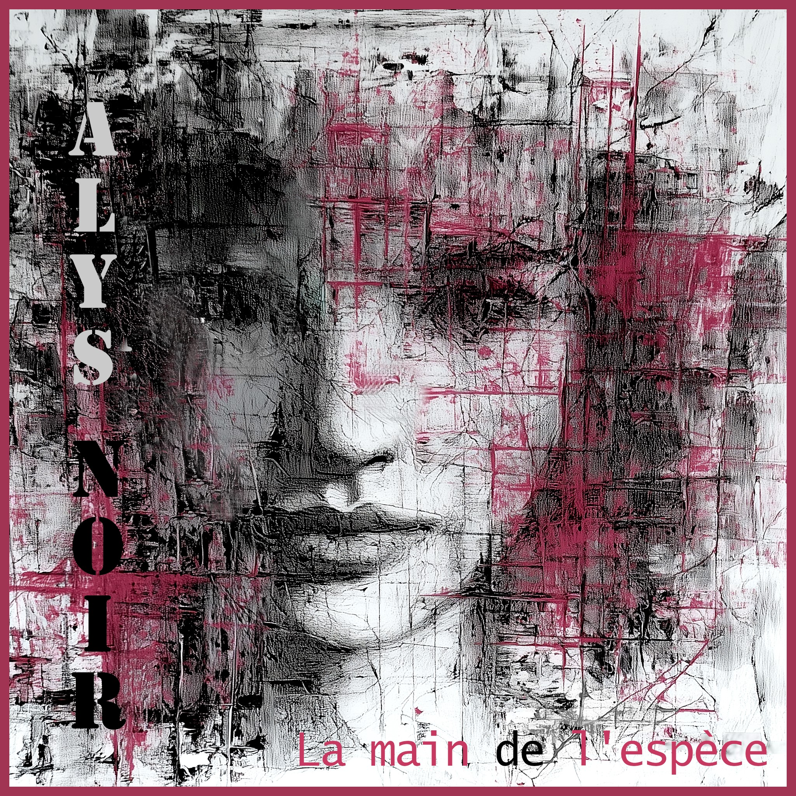
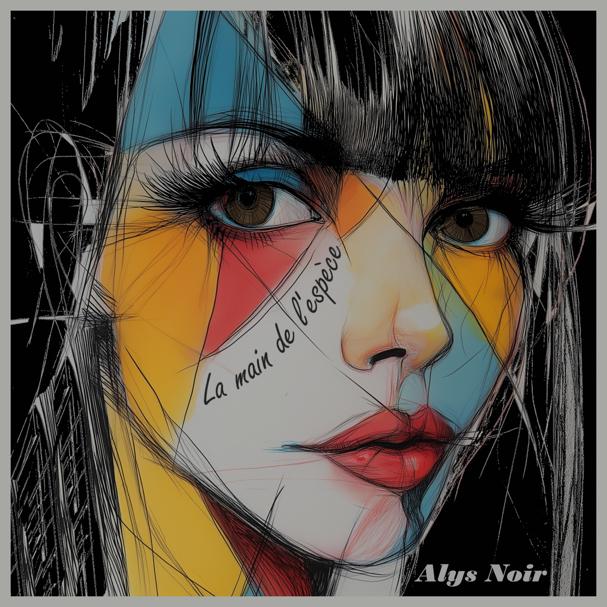
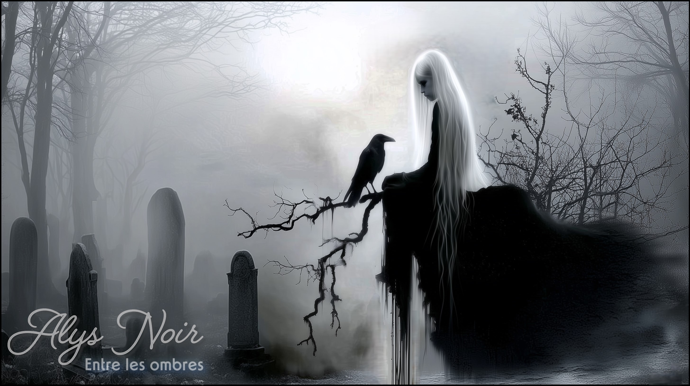
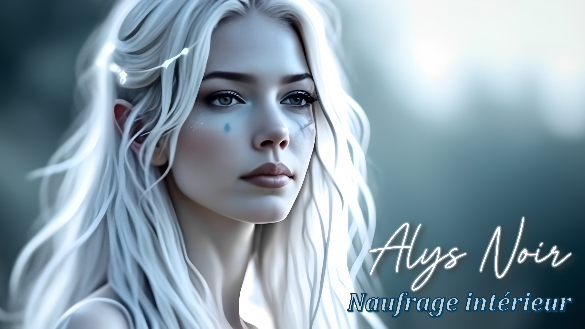
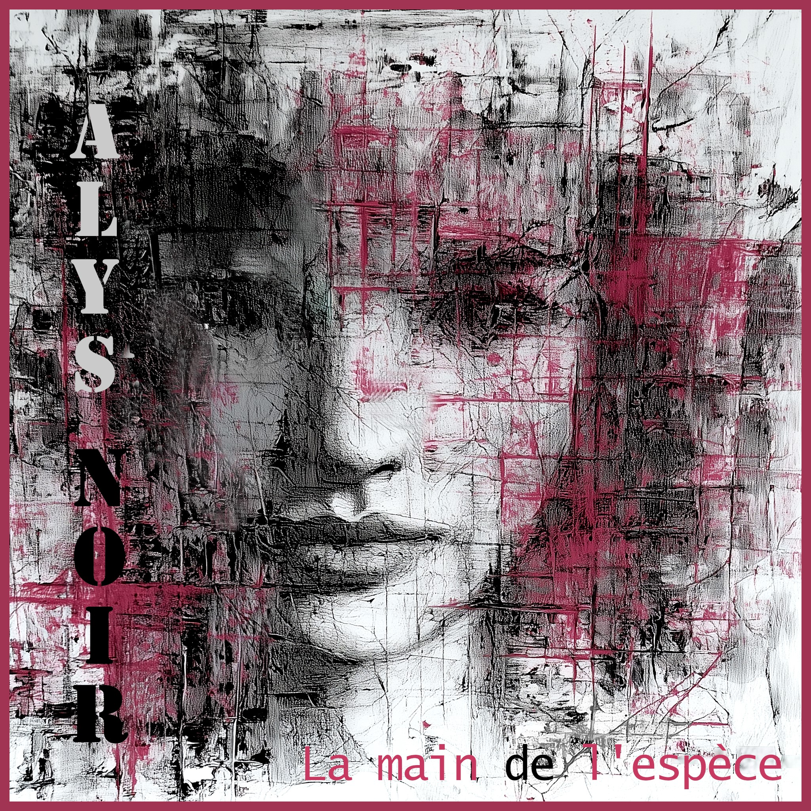
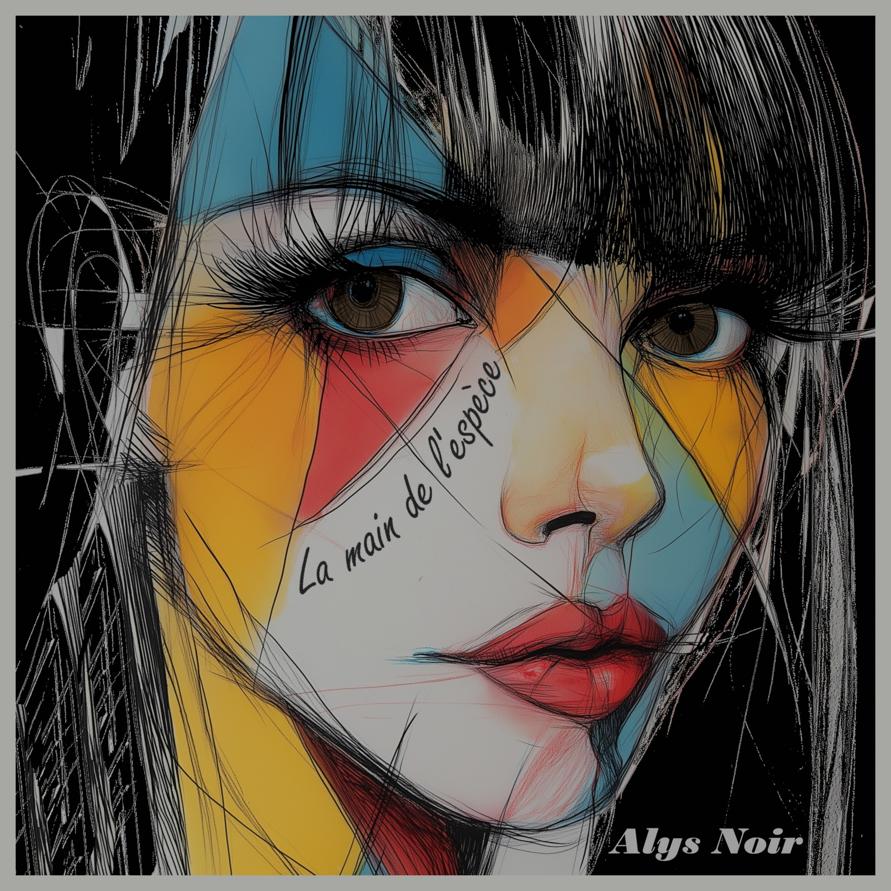
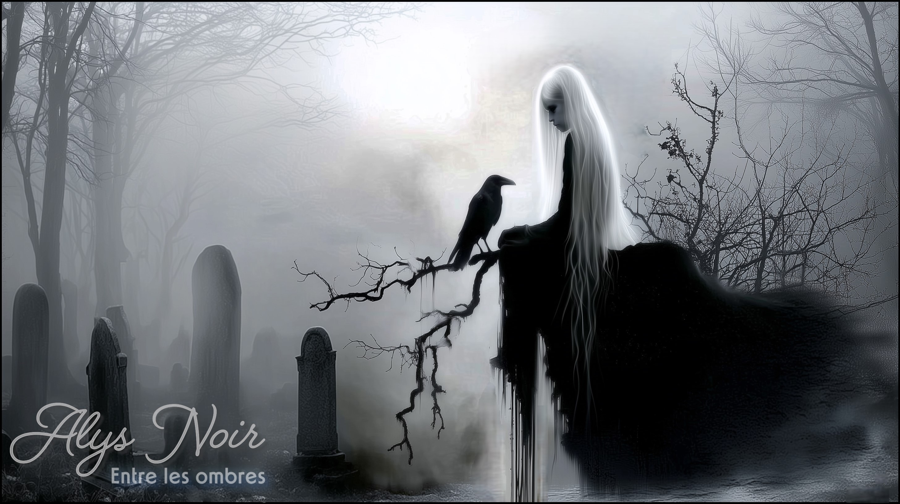
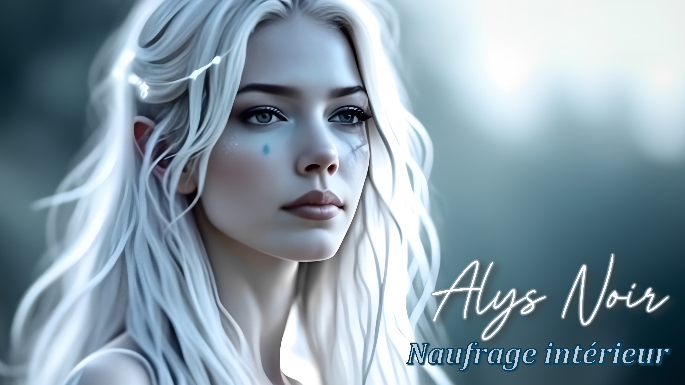
 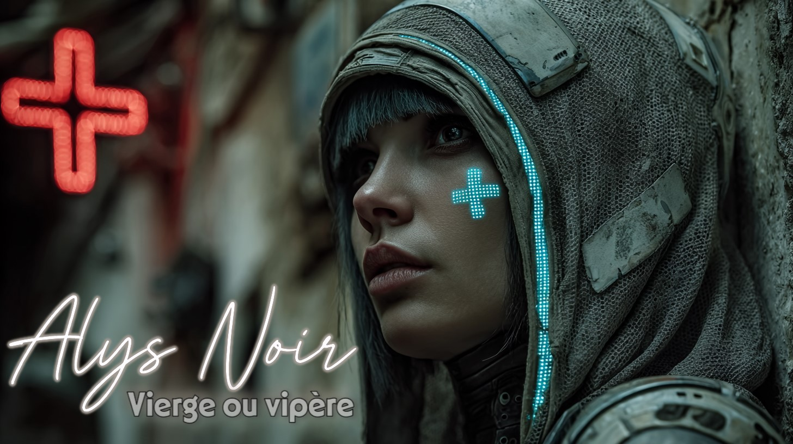
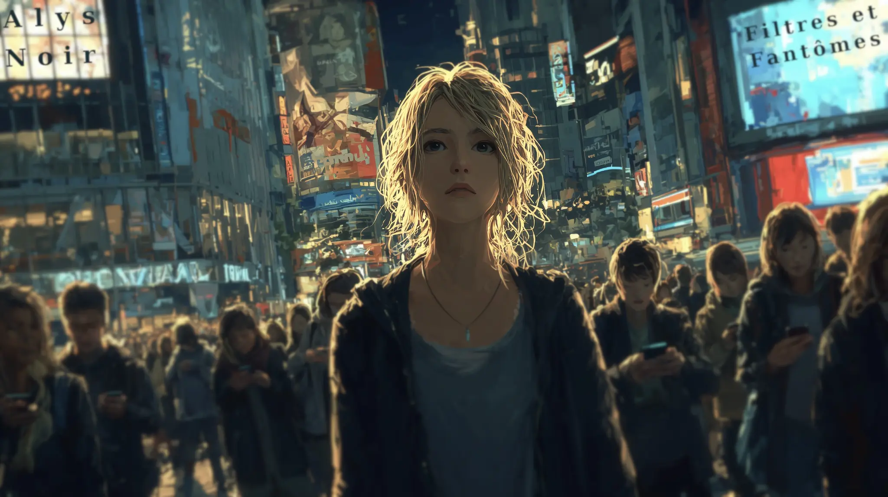
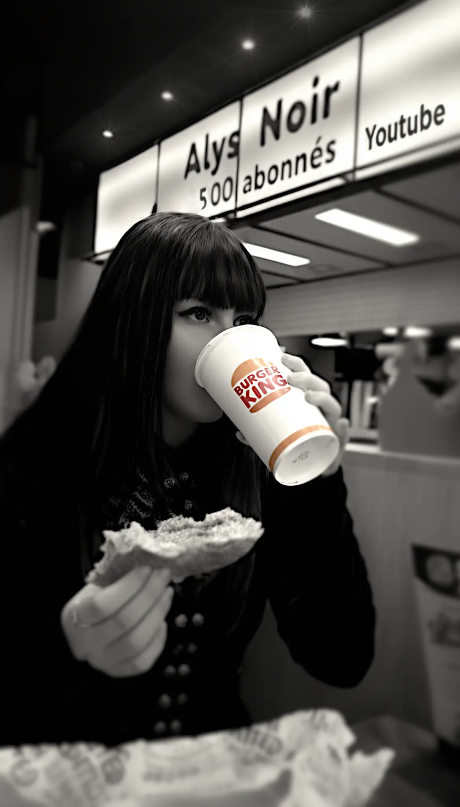
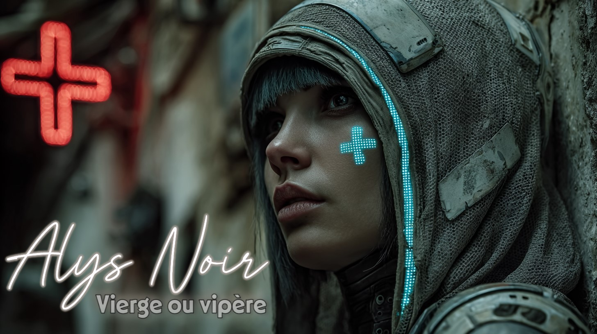
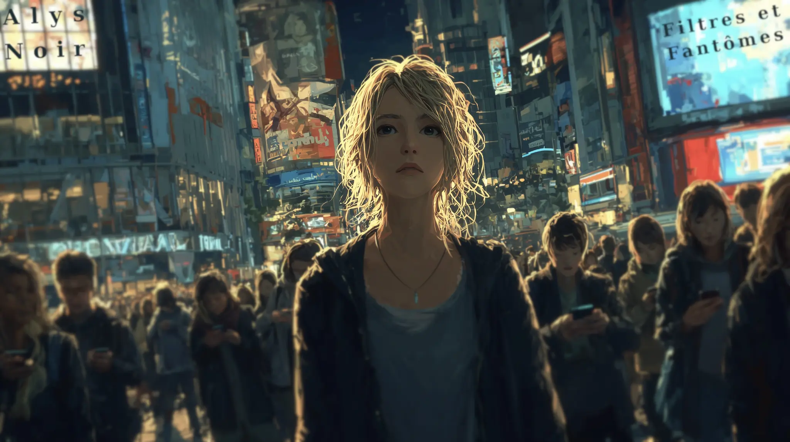
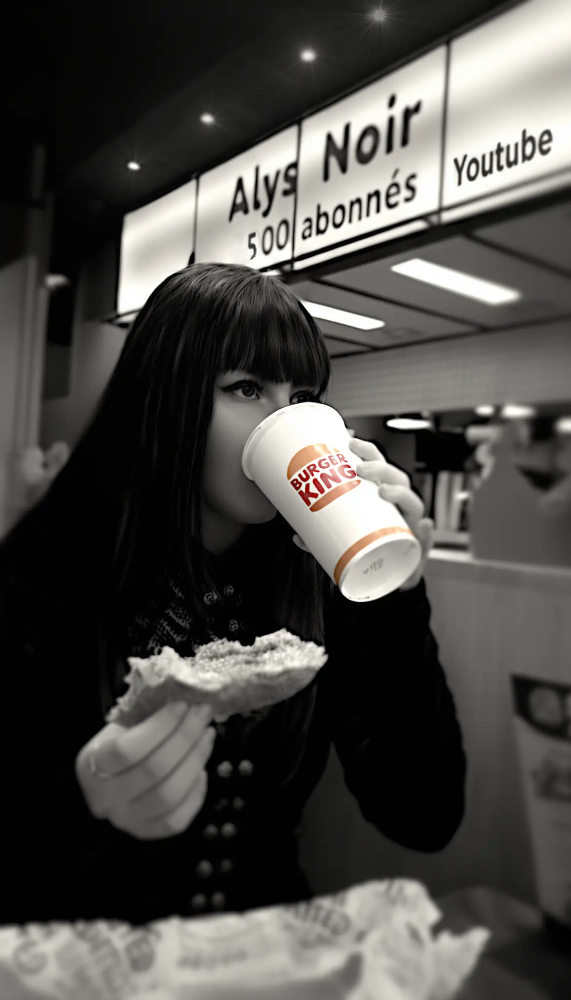